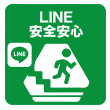

▲タップすると移動します
※新たに友達登録が必要です
安全安心なんようLINE
防災・防犯等に関する情報を「安全安心なんよう」LINEにより発信します。
また、災害時には、被害箇所などを画像で送ることで、迅速な応急対応に繋げることができます。
どうして、市の公式LINEとは別なの？
市の公式LINEでは、簡単なキーワード入力による自動応答を採用していることから、原則、メッセージをお受けすることができません。
非常時連絡用の「安全安心なんよう」では、写真や位置情報など、市民の皆さんが通報できるようにしています。